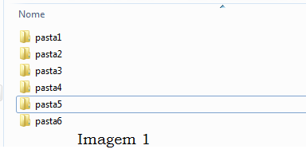
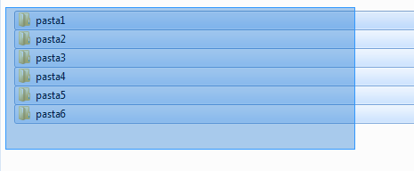
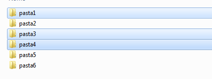
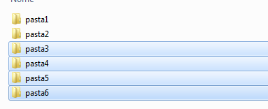

Agora, vamos aprender um pouco sobre a seleção de arquivos.
Basicamente, existem 3 formas de seleção: pelo mouse, pela tecla Alt do teclado, e pela tecla Ctrl, também do teclado.
Considere o cenário abaixo:
*Seleção pelo Mouse: Você pode selecionar arquivos clicando sobre eles uma vez, e aquele arquivo ficará selecionado.
Ou você também pode selecionar vários arquivos pelo mouse, selecionando uma área desejada, no caso, seleciona uma área abrangendo o primeiro e o último arquivo desejado, conforme segue:
*Seleção com Ctrl: Através da tecla Ctrl, do teclado, você também consegue selecionar. Dos arquivos da imagem 1, você quer selecionar 'pasta1', 'pasta3' e 'pasta4', por exemplo.
Para tanto, você pode clicar em um deles e, segurando a tecla Ctrl, selecione o próximo. Você verá que somente os arquivos que você cliclar, segurando Ctrl, ficarão selecionados, conforme abaixo:
*Seleção com Alt: Através da tecla Alt, do teclado, você também consegue selecionar. Ao contrário do Ctrl, com o Alt você clica no primeiro arquivo desejado, segura o Alt e clica no último arquivo desejado.
Como resultado, você perceberá que todo o intervalo ficará selecionado, conforme abaixo:
